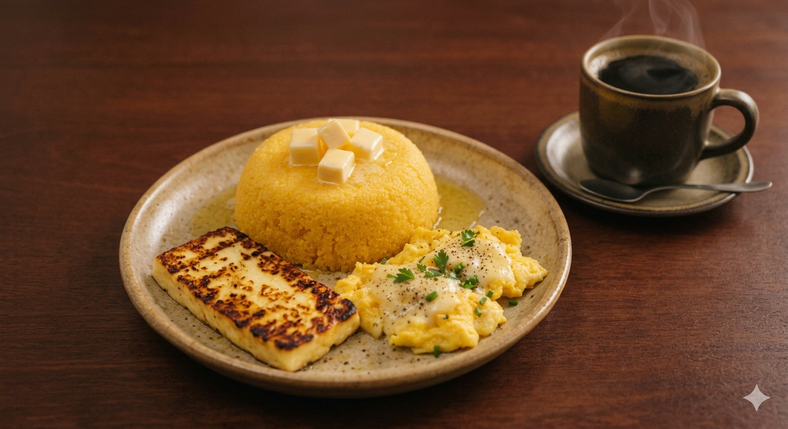
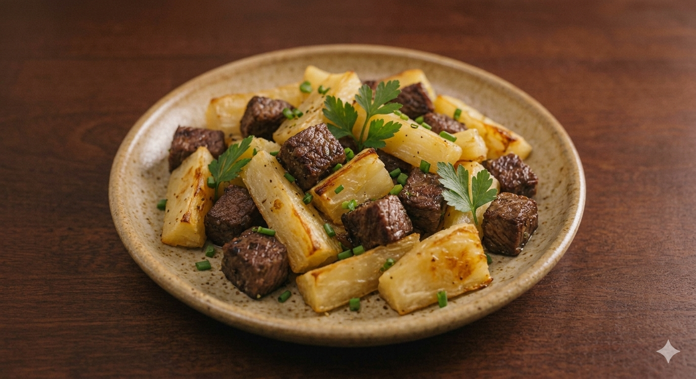
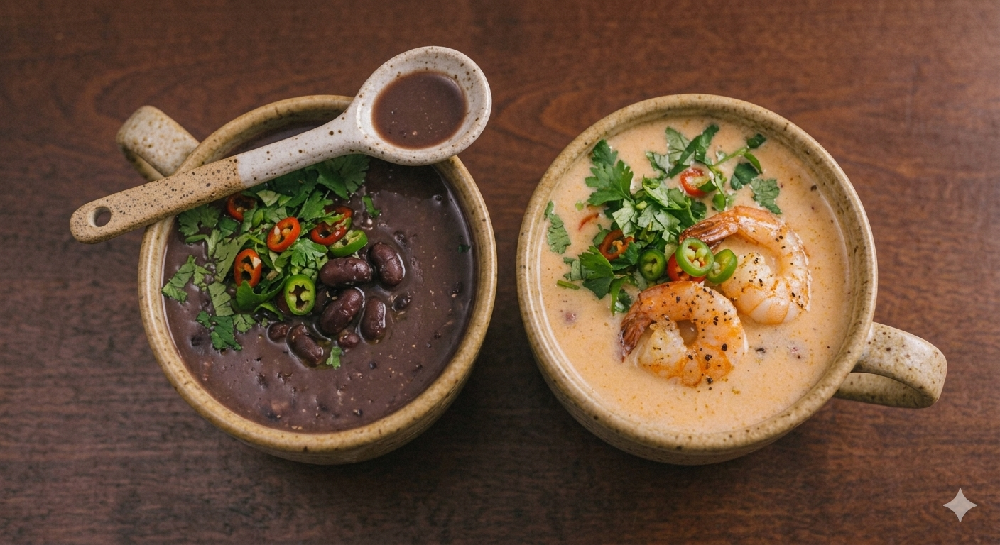
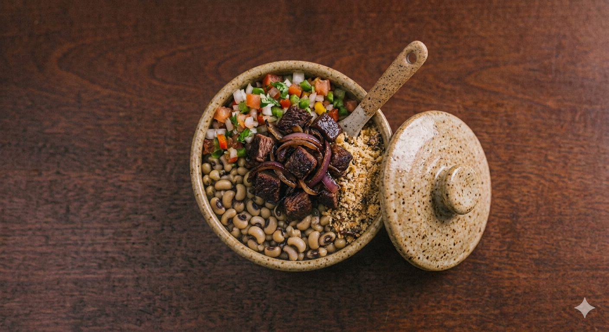
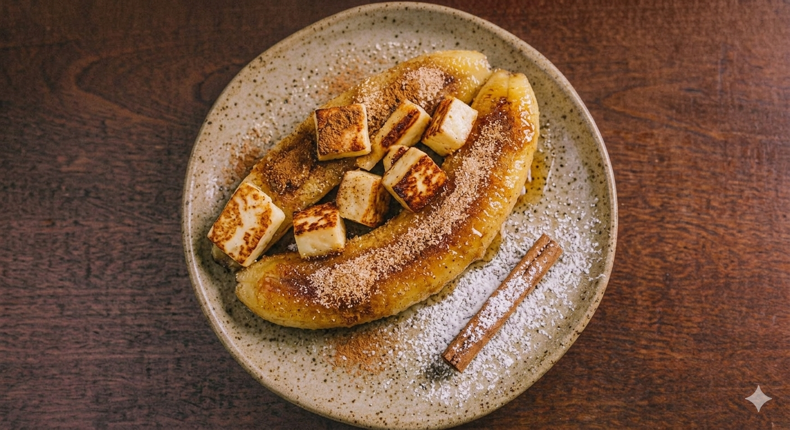
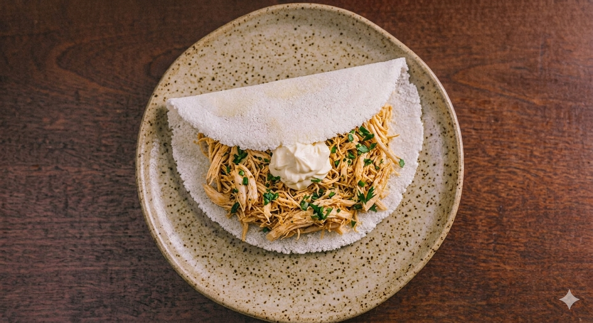

TRADIÇÃO E SABOR
O verdadeiro gosto de Pernambuco em cada prato
Aqui, a culinária pernambucana ganha vida com receitas tradicionais, ingredientes frescos e muito carinho em cada detalhe.
SOBRE NÓS
Mais que um restaurante, um pedaço de Pernambuco.
Surgimos de uma união familiar em 2007 e buscamos proporcionar a você uma experiência autêntica e acolhedora.
Somos um restaurante dedicado a levar o melhor da culinária pernambucana para você. Nossa missão é preservar a tradição, valorizar os sabores regionais e proporcionar uma experiência única, com pratos feitos de forma artesanal e ingredientes selecionados.
Um lugar especial com gosto de casa. Aproveite nosso espaço com sensação de pertencimento.

Conheça nossas opções
O Sabor do Sertão tem o local perfeito para desfrutar dos pratos tradicionais de Pernambuco, com excelente serviço e uma atmosfera acolhedora.

Cuscuz
Cuscuz nordestino servido com ovos, queijo coalho e um cafezinho.

Macaxeira
Macaxeira e carne de sol em cubos.

Caldinhos
Caldinho de feijão ou camarão.

Arrumadinho
Arrumadinho e carne de charque acompanhados de farofa e vinagrete.

Banana
Banana e queijo servidos com açúcar e canela.

Bolo de Rolo
O tradicional bolo de rolo acompanhado de sorvete.

Arroz doce
Arroz doce tradicional, feito com leite, açúcar e canela.

Tapioca
Tapioca tradicional, feita com farinha de mandioca e recheada com frango e cream cheese.
- Telefone: (81) 98888-7777
- Email: contato@sabordosertao.com.br
- Instagram: @sabordosertao
- Rua das Flores, 123
- Boa Viagem, Recife - PE
- CEP 51021-000
- Ver no mapa